Les règles du rugby à XV en font un sport très particulier. Il s'agit d'un sport d'équipe, de
combat, avec ballon. Sa spécificité principale est de mêler jeu à la main et combat physique
parfois violent. Il s'ensuit un jeu très ouvert qui nécessite une réglementation
sophistiquée pour éviter que le rugby ne devienne inintéressant, illisible, ou exagérément
dangereux.
L'essentiel du jeu consiste à tenter de faire progresser le ballon vers l'avant,
c'est-à-dire l'en-but adverse, pour marquer des points grâce à un essai, un drop, ou une
pénalité due à une faute adverse ; ceci, tout en tentant d'empêcher l'équipe adverse d'en
faire autant. Le cours du jeu est segmenté en différents types de phases :
- jeu courant : progression balle en main, passe de balle (pas « de passe en-avant »), jeu au pied, tentative d'essai ou de drop
- remise en jeu : pénalité, remise en touche, coup d'envoi et renvoi, mêléeregroupement : plaquage (« phase plaqueur-plaqué »), ruck (mêlée ouverte), maul
- remise en jeu : pénalité, remise en touche, coup d'envoi et renvoi, mêlée
Les diverses phases de jeu réglées, arrêtées (remise en jeu) ou non (regroupement),
contribuent grandement au caractère du rugby à XV et à la complexité de ses règles, qui
évoluent régulièrement. Les phases de regroupement, dans lesquelles on entre de facto, sont
encore plus particulières à ce sport ; les actions licites ainsi que le placement y sont
restreints, implicitement pour l'observateur non averti.
Les règles officielles du rugby de compétition sont édictées par l'organisme international
World Rugby (anciennement nommé International Rugby Board ou IRB). Des règles simplifiées ou
réduisant le domaine de jeu sont pratiquées pour l'apprentissage, les catégories de jeunes,
le jeu hors compétition, ainsi que des variantes telles que beach rugby ou touch rugby.
Particularités du rugby
À la différence du football, les mains sont utilisées pour jouer au rugby. Cependant, un
joueur ne peut faire une passe à la main à un autre joueur que vers l'arrière ou
latéralement, c'est-à-dire dans toutes les directions sauf vers l'avant. Un joueur peut
toutefois envoyer le ballon vers l'avant (et dans les autres directions) en le frappant avec
le pied. Cela signifie que la majorité de la progression d'une équipe s'effectue par un
cycle de passes, de tentatives de percée et de plaquages. Chacun de ces cycles, très
simplifié, est appelé phase de jeu.
Un aspect particulier du rugby réside dans « l'avantage » (règle 8). Si une équipe commet
une infraction aux règles mais que l'équipe adverse en retire un gain territorial ou un
avantage tactique, l'arbitre laisse l'action se jouer. Si l'équipe bénéficiaire de
l'avantage n'en retire rien, l'arbitre interrompt alors le jeu et accorde une mêlée, un coup
franc ou une pénalité selon la faute commise.
Le terrain
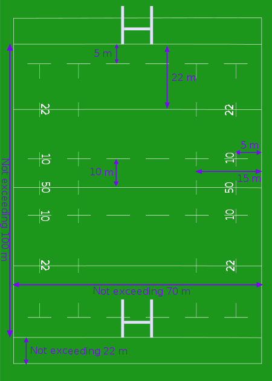Un terrain de rugby est composé d'une surface généralement gazonnée d'une largeur maximale de
70 mètres et d'une longueur maximale de 144 mètres. Des lignes sont peintes en blanc à
intervalle régulier : la ligne de ballon mort, la ligne de but ou d'en-but, la ligne des 22
mètres (en référence à la ligne d'en-but), la ligne des 10 mètres (en référence à la ligne
du milieu de terrain, aussi appelée la ligne de 40 mètres en référence à la ligne d'en-but),
et la ligne de milieu de terrain. Ce schéma se répète sur l'autre partie du terrain. La
distance maximale entre la ligne de ballon mort et la ligne d'en-but est de 22 mètres. La
distance entre les deux lignes d'en-but, appelée « aire de jeu », est en général de 100
mètres, soit sa longueur maximale. Des lignes en pointillés sont également tracées à 5
mètres des lignes d'en-but et de touche ainsi qu'à 15 mètres des lignes de touche.
Le but est constitué de deux poteaux (appelés « pagelles » dans le jargon rugbystique)
situés au centre de la ligne de but et séparés par une distance de 5,6 mètres. Une barre
horizontale située à 3 mètres au-dessus du sol relie les poteaux et leur donne une forme de
H.
Rugby.png
Des drapeaux hauts de 1,2 mètres sont placés à l'extérieur du terrain, au niveau de la ligne
du milieu, des 22 mètres, d'en-but et de ballon mort. Les drapeaux de la ligne de but et de
ballon mort sont placés à l'intersection de la ligne de touche et sont considérés comme
dehors si le ballon les touche, mais font partie de l'en-but si touchés par le corps d'un
joueur.
Les lignes de touche d'un terrain de rugby sont considérées comme ne faisant pas partie de
l'aire de jeu. Ainsi, lorsqu'un joueur marche sur une de ces lignes, il est en touche. À
l'inverse, la ligne de but fait partie de l'en-but (tout comme les poteaux), ce qui permet à
un joueur aplatissant le ballon sur cette ligne de valider un essai. Enfin, la ligne de
ballon mort ne fait pas partie du terrain et aucun essai ne peut être marqué si le ballon
est aplati sur cette ligne.
L'arbitrage
Un match de rugby est arbitré par un arbitre central, assisté par deux juges de touche et
d'un arbitre vidéo. Les juges de touche décident si un joueur ou le ballon a franchi la
ligne de touche et si une pénalité est correctement passée entre les poteaux. Ils peuvent
également aider l'arbitre en lui donnant des informations sur d'autres types de fautes ou en
confirmant ou non si un essai a été marqué. Lorsqu'un match est télévisé, il existe un
quatrième arbitre, le Television Match Official (TMO), souvent appelé l'arbitre-vidéo. Son
principal rôle est d'aider l'arbitre pour décider si un essai est valide ou non à l'aide des
images proposées par la télévision. Les circonstances d'utilisation de l'arbitre-vidéo sont
décidées par les organisations appropriées. Malgré la présence d'autres arbitres, l'arbitre
principal est le « seul juge des faits et des règles ». Lorsqu'un arbitre est incapable de
terminer le match, il est remplacé par un autre arbitre : le juge de touche n°1 ou l'arbitre
le plus expérimenté se trouvant sur le stade s'il n'y a pas de juges de touche.
L'arbitre peut sanctionner un acte d'anti-jeu par une exclusion temporaire de 10 minutes
(carton jaune) ou définitive (carton rouge). Ces fautes peuvent être un acte déloyal ou
violent, pour des infractions répétées de la même règle ou une faute délibérée pour empêcher
l'équipe adverse de marquer ou d'acquérir un avantage décisif. Cependant, le rugby étant un
sport physique, les petits accrochages entre joueurs ne sont généralement pas sanctionnés.
Un carton rouge signifiant l'exclusion définitive du terrain peut être adressé à un joueur
ayant délibérément et malgré les précédents avertissements (au premier lieu desquels un
carton jaune) empêché ou gêné le jeu ou en étant particulièrement violent à l'égard d'un
autre joueur. Une exclusion du terrain peut entraîner une période ou un nombre de matchs de
suspension décidée par les instances nationales.
Il est peu courant de voir les joueurs contester les décisions de l'arbitre. Cependant, si
un ou plusieurs joueurs contestent une faute sifflée par l'arbitre ou bien ne font pas
l'effort de se replier à 10 mètres de l'arbitre, l'arbitre peut pénaliser leur équipe en
faisant avancer l'équipe adverse de 10 m vers leur ligne d'essai. Cela peut favoriser la
réussite d'une pénalité ou d'une relance aboutissant à un essai...
Le déroulement du jeu
Traditionnellement, la première possession de balle et le camp attribué à chaque équipe sont
tirés à pile ou face par l'arbitre, bien que les règles précisent que cela devrait être fait
par l'un des capitaines. Le capitaine qui remporte le tirage au sort a le choix de décider
entre le coup d'envoi et le côté du terrain occupé par son équipe. Un certain nombre
d'éléments, comme la direction et la force du vent ou l'angle du soleil, ainsi que la
probabilité de gagner ou perdre le ballon après le coup d'envoi, déterminent le choix du
capitaine.
Le coup d'envoi se déroule au milieu du terrain. Chaque période dure 40 minutes et le jeu ne
s'arrête que lorsque le ballon est « mort ». La durée du temps supplémentaire est une
combinaison de facteurs comme la somme des arrêts de jeu au cours de la mi-temps et du
moment auquel une faute sera commise durant ce temps supplémentaire. La mi-temps dure dix
minutes pour permettre aux joueurs de se remettre de leur fatigue, aux entraîneurs de donner
de nouveaux conseils, aux spectateurs d'avoir accès aux agréments et aux chaines de
télévision de passer de la publicité. Pendant la seconde période, les équipes changent de
côté et l'équipe qui n'a pas donné le coup d'envoi en début de match assure la remise en
jeu.
Marquer des points
Le principe du rugby à XV est de marquer plus de points que son adversaire. Pour cela, il existe plusieurs moyens.
- Porter le ballon au sol avec les mains ou les bras, ou en exerçant une pression
verticale sur le ballon avec n'importe quelle partie du corps comprise entre la taille
et le cou inclusivement dans l'en-but adverse. La base des poteaux du but adverse ne
fait plus partie de la zone d'en-but. Cette action est appelée « essai » et sa valeur
est de cinq points aujourd'hui (voir Décompte des points au rugby à XV).
À l'origine, les points n'étaient pas comptabilisés. L'objectif était alors de franchir la ligne de but adverse pour obtenir le droit de « tenter » (en anglais try) de marquer un « but » (goal) en faisant passer au pied le ballon entre les barres. Le vainqueur était celui qui marquait le plus de buts. Entre 1875 et 1877, le vainqueur était toujours celui qui marquait le plus de buts, mais les essais servaient à départager une éventuelle égalité.
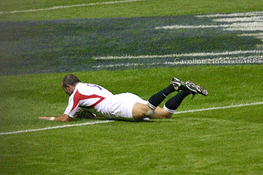
- Après avoir marqué un essai, un joueur de l'équipe tente de botter le ballon entre les poteaux et au-dessus de la barre horizontale du but adverse, depuis la perpendiculaire du point où a été aplati le ballon. Cette action s'appelle une transformation et vaut deux points.
- Un essai de pénalité peut être accordé si l'équipe qui défend commet une faute volontaire d'anti-jeu, sans laquelle, selon l'arbitre, l'équipe attaquante aurait marqué un essai. Elles sont généralement accordées à la suite d'une faute dans un ruck, une mêlée, un maul ou un hors-jeu défensif près de la ligne de but. Le joueur fautif est généralement averti ou exclu. Un essai de pénalité vaut sept points et n'est pas transformé.
- Botter le ballon entre les poteaux et au-dessus de la barre horizontale des buts adverses vaut trois points. C'est possible à la suite d'une pénalité ou d'un drop. Dans ce dernier cas, le ballon doit être lâché par le joueur et frappé avec le pied de demi-volée.
Le coup au but est une part importante du rugby. Les matches peuvent être gagnés ou perdus selon cette seule action. Disposer d'un buteur précis et puissant peut sanctionner de trois points une équipe commettant une faute partout dans son côté du terrain, et parfois même au-delà. Cette menace met plus de pression sur la défense afin d'éviter de donner trop de pénalités en commettant des fautes.
Le jeu courant
Le jeu courant se déroule lorsqu'une équipe essaie de progresser vers l'en-but adverse en
courant et en se passant le ballon. La passe ne doit pas s'effectuer vers l'avant (règle
12). Lorsque cela arrive, ou lorsque le ballon tombe des mains du joueur vers l'avant,
l'arbitre siffle une «passe en avant » et accorde à l'équipe adverse une mêlée. En revanche,
lorsqu'un joueur bloque le ballon botté par un adversaire en tendant les bras, le rebond du
ballon vers l'avant n'est pas alors considéré comme un en-avant. Lorsqu'un joueur passe
délibérément le ballon à un coéquipier se trouvant devant lui ou envoie à la main le ballon
volontairement en touche, une pénalité est accordée à l'équipe adverse par l'arbitre.
(De même un défenseur commet un "en avant s'il projette le ballon vers l'avant en tentant un
plaquage, la faute est sanctionnée par une pénalité ou une mêlée selon qu'il y avait
intention ou non )
Il y a trois méthodes de base dans le jeu courant :
- À la sortie d'un regroupement ou d'une mêlée, un joueur, généralement un avant, charge la défense adverse « au ras », protégeant le ballon entre ses bras lors de l'impact, et, rejoint par d'autres joueurs, progresse lentement contre la défense. Le but de cette action est notamment de fixer la défense adverse et de libérer des espaces pouvant permettre à un joueur, en général un arrière, de percer le rideau défensif constitué par l'équipe adverse.
- Lorsque le ballon sort d'un regroupement, d'une mêlée ou d'une touche par une longue passe du demi de mêlée (n° 9) au demi d'ouverture (n° 10), celui-ci a alors la possibilité de passer le ballon aux arrières, permettant ainsi de développer un « jeu de ligne ». Les arrières courent vers l'avant, essaient d'éviter et de dépasser les défenseurs et, si un plaquage ne peut être évité, attendent le soutien de leurs coéquipiers avant de passer le ballon ou de se faire plaquer, occasionnant un regroupement. De bons arrières sauront varier les angles et les points d'attaque de leur course et seront capables de se trouver en position d'utiliser les erreurs de placement de l'adversaire lorsqu'ils recevront le ballon.
- Enfin, il existe les contres-attaques. Lorsqu'un joueur, dans ses 22 m, reçoit dans ses bras le ballon botté par un adversaire, il peut choisir de garder le ballon et de courir le plus rapidement possible vers l'en-but adverse afin de surprendre l'équipe qui s'attend à un coup de pied. L'avantage est que le joueur dispose de plus d'espace pour évoluer, la plupart des coéquipiers du frappeur se trouvant hors-jeu.
Regroupements
L'objectif de l'équipe qui défend est d'arrêter le porteur du ballon et de l'amener au sol pour lui disputer le ballon. Cette action est appelée « plaquage » et est généralement suivie par une « mêlée ouverte ». Il est également possible de créer un regroupement mobile, un « maul ».
Le plaquage
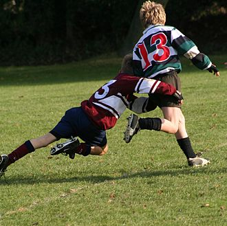Un joueur peut plaquer un joueur adverse portant le ballon en l'attrapant et en l'attirant au sol. Toucher le sol avec un genou ou le ballon est suffisant pour être considéré « mis au sol ». Le plaqué doit passer le ballon ou le lâcher immédiatement. Le plaqueur doit relâcher le plaqué et s'éloigner. Le ballon devient ainsi libre pour être joué par un autre joueur ou disputé dans une mêlée ouverte. Cette phase porte le nom de « phase plaqueur-plaqué ». Si le porteur du ballon est plaqué, il peut toutefois marquer un essai dans la continuité du mouvement, par exemple en tendant le bras au-delà de la ligne de but. Si le porteur du ballon n'est pas mis au sol, il n'y a pas plaquage et un maul peut se former.
Mêlée ouverte
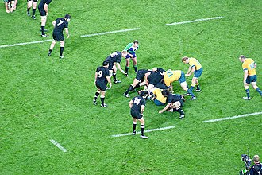La mêlée ouverte, également appelée mêlée spontanée ou ruck1, est un combat pour la
possession du ballon qui se déroule dans la zone plaqueur-plaqué, là où le porteur du ballon
a été plaqué. Après un plaquage, les joueurs des deux équipes peuvent essayer de s'emparer
du ballon qui doit avoir été libéré par le plaqué. Si deux joueurs opposés arrivent en même
temps et s'agrippent l'un à l'autre tout en restant sur leurs pieds, il y a formation d'une
mêlée ouverte. Tout joueur qui veut participer au ruck doit le faire en « passant par la
porte », c'est-à-dire en passant par l'axe du regroupement et ne pas venir sur les côtés,
faute sanctionnée par une pénalité. Au lieu de chercher à jouer directement le ballon, les
joueurs essaient de repousser les adversaires dans leur camp (action de "soutien" pour
éviter la dépossession du ballon) pour ensuite talonner le ballon avec le pied (ratissage ou
rucking) pour permettre sa libération par le demi de mêlée qui attend derrière la mêlée
ouverte. Si le ballon ne peut être libéré, l'arbitre accorde une mêlée ordonnée avec
introduction pour l'équipe qui progressait au dernier impact.
De nombreuses fautes ont lieu dans ces regroupements. Des joueurs peuvent ralentir la
libération de la balle par l'équipe adverse ou l'accélérer par la sienne en la bloquant avec
les mains, en s'allongeant dessus ou en effondrant volontairement le ruck. Dans ces cas, une
pénalité est accordée. Lorsque l'équipe qui défend récupère le ballon soit parce qu'un
joueur adverse l'a lâché ou s'il lui a été arraché des mains, les rôles s'inversent et
l'équipe attaquante devient l'équipe défendante et vice-versa.
Maul
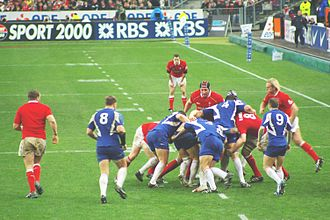Un maul se forme lorsque le porteur du ballon est pris par un ou plusieurs adversaires et, soutenu par ses coéquipiers, reste debout. Il implique donc au minimum trois joueurs : le porteur du ballon, son soutien et le joueur adverse. D'autres joueurs, en général des avants, peuvent se joindre au maul mais, comme pour la mêlée ouverte, ils doivent le faire en passant dans l'axe du regroupement et rester sur leurs pieds. Si le maul s'arrête et que le ballon n'est pas libéré, l'arbitre peut siffler une mêlée avec introduction pour l'équipe qui n'était pas en possession du ballon lors de la formation du maul. La tactique du « maul déroulant » a lieu lorsque le ballon est passé de main en main dans le maul jusqu'au dernier joueur, permettant aux joueurs se trouvant sur les côtés du maul de sortir pour revenir pousser sur l'arrière et modifier ainsi la course du maul. Cette tactique peut être très efficace pour gagner du terrain tout en fixant une partie de la défense adverse. Un maul qui avance est appelé « groupé pénétrant ». Cette tactique est souvent utilisée dans les 22 m adverses. Durant la saison 2008-2009, les championnats nationaux de l'hémisphère nord ont autorisé l'écroulement des mauls à titre expérimental, pénalisant les équipes ayant un pack puissant et causant plusieurs blessures légères. À partir de la saison 2009-2010, les mauls ne peuvent plus être écroulés sur les côtés, à nouveau considéré comme un acte d'anti-jeu sanctionné par une pénalité.
Hors-jeu dans les regroupements
Dans les mêlées spontanées et les mauls, il existe deux lignes de hors-jeu : une par équipe, se situant derrière le pied le plus en arrière du dernier joueur participant au regroupement (règle 11). Tout joueur d'une équipe doit donc se placer derrière cette ligne et ne peut rejoindre le regroupement qu'en passant par l'arrière du regroupement. Chaque joueur qui sort du regroupement doit immédiatement se replacer derrière sa ligne de hors-jeu. Un hors-jeu est sanctionné par une pénalité. Cette règle voit une multitude de fautes sifflées par les arbitres, les joueurs ayant souvent tendance à rejoindre un regroupement, en particulier les rucks, par les côtés. Associé à l'obligation de rester sur ses pieds, le hors-jeu est l'une des fautes les plus souvent sanctionnées. C'est à partir d'un maul (ou d'une touche) que se forme la ligne de hors-jeu.
Jeu au pied
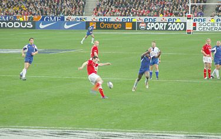Dans certaines situations, il peut être préférable de jouer au pied plutôt que de progresser
en gardant le ballon dans les mains. Il s'agit de gagner du terrain notamment en défense,
pour éloigner le jeu de la ligne de but, ou en attaque, pour lober et désorganiser la
défense adverse.
Lorsqu'une équipe possède le ballon dans ses propres 22 m, il est important de relâcher la
pression et de disposer de plus d'espace de jeu. L'action la plus courante est de botter le
ballon directement en touche, le plus loin possible (si le ballon a été amené dans les 22
par l'équipe adverse). Ce coup de pied est généralement assuré par le demi d'ouverture
lorsque le ballon est récupéré dans un regroupement ou par une pénalité et par les ailiers
ou l'arrière si le ballon est récupéré depuis un coup de pied adverse. Comme la touche est
généralement aléatoire, à cause des rebonds incertains causés par la forme du ballon, il est
parfois préférable d'obtenir une touche courte mais assurée plutôt que de tenter une touche
lointaine mais dangereuse sans garantie de résultat, s'exposant ainsi à une contre-attaque
surprise de l'adversaire.
Il existe plusieurs types de « coups de pied à suivre ».
Lorsqu'une équipe progresse peu en attaque, un joueur, un demi ou un trois-quart, peut
botter le ballon dans une zone non-défendue par l'adversaire, le forçant ainsi à quitter ses
positions pour protéger le ballon. Cela permet soit d'obtenir une touche si le ballon
rebondit dans l'aire de jeu avant d'en sortir, soit aux arrières de prendre de vitesse les
défenseurs pour récupérer le ballon et de continuer à jouer.
Une « chandelle » (en anglais, « up-and-under » ou « Garryowen ») est un coup de pied frappé
haut et fort dans le ciel. Cela permet au frappeur et à ses coéquipiers se trouvant derrière
lui au moment de la frappe de se porter sous le point de chute du ballon et d'en disputer la
possession à l'adversaire.
Un ailier peut effectuer un coup de pied rasant le long de la ligne de touche pour prendre
de vitesse les joueurs adverses s'apprêtant à le plaquer ou le pousser en touche et qui
devront se retourner pour suivre le frappeur qui aura la possibilité de continuer sur sa
lancée.
Le jeu au pied est généralement considéré comme étant l'apanage des arrières en raison de
leur plus grande vitesse de course. Il existe des exceptions comme le troisième ligne aile
John Taylor qui a marqué une pénalité pour le Pays de Galles lors du tournoi des cinq
nations 1971, le deuxième ligne des Wallabies John Eales et le numéro 8 des All Blacks
Zinzan Brooke a même marqué un drop du milieu de terrain.
Hors-jeu lors des coups de pied
Lorsqu'un joueur botte le ballon, tous ses coéquipiers situés entre lui et la ligne de ballon mort adverse sont hors-jeu (règle 11). Un joueur redevient en-jeu lorsqu'il est dépassé par le botteur ou un coéquipier situé en-jeu au moment du coup de pied ou lorsqu'un adversaire a parcouru cinq mètres avec le ballon, a fait une passe ou a eu un contact intentionnel avec le ballon (volonté de s'en saisir sans y parvenir). Tout joueur hors-jeu doit se tenir à dix mètres du ballon. Si, à la suite d'un coup de pied à suivre, le ballon est récupéré par un adversaire et que celui-ci est plaqué ou simplement gêné par un joueur hors jeu (n'étant pas resté à dix mètres), la pénalité a lieu à l'emplacement initial du coup de pied: ce type de faute peut donc se révéler très lourd de conséquence.
Remise en jeu
Les remises en jeu ont lieu après que le jeu a été arrêté.
Coup de pied d'envoi/de renvoi
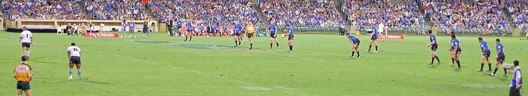Au début de chaque mi-temps, une équipe donne le coup d'envoi. Il s'effectue par un coup de
pied tombé au niveau de la ligne du milieu de terrain. Le ballon doit franchir au minimum 10
mètres dans le camp adverse pour être jugé jouable. Le demi d'ouverture frappe généralement
le ballon haut pour qu'il retombe juste derrière la ligne pour permettre à ses coéquipiers
de couvrir la distance pendant que le ballon est en l'air. Le coup de pied peut également
être long et tendu pour mettre l'équipe adverse sous pression dès l'entame de match. Si le
ballon ne franchit pas les 10 m, l'équipe adverse peut choisir de donner un nouveau coup
d'envoi ou de bénéficier d'une mêlée au centre du terrain. Si le ballon sort en touche sans
avoir été touché, l'équipe adverse peut choisir une mêlée au centre du terrain ou une touche
sur la ligne médiane.
Il existe également un coup de pied de renvoi sur la ligne des 22 m. Il est accordé lorsque
l'équipe qui attaque envoie le ballon dans l'en-but adverse sans parvenir à l'aplatir parce
qu'un défenseur l'a aplati avant. Lorsqu'un joueur envoie le ballon dans l'en-but adverse et
qu'il franchit la ligne de ballon mort, l'équipe adverse a le choix entre bénéficier d'un
coup de renvoi aux 22 ou une mêlée à l'endroit où le ballon a été frappé. Le renvoi aux 22
peut être frappé à n'importe quel endroit sur ou derrière la ligne des 22 m.
Pénalité et coup franc
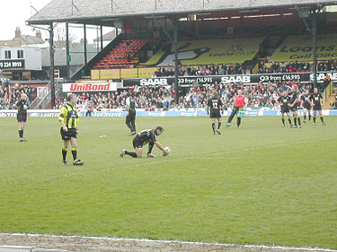Les pénalités sont accordées pour une faute volontaire ou un jeu dangereux. Le botteur a la
possibilité de frapper au but, entre les poteaux et au-dessus de la barre horizontale
adverse, ou d'envoyer directement le ballon en touche à proximité de la ligne de but pour
bénéficier du lancer en touche. On parle alors de « pénaltouche ». Il peut également jouer
court et envoyer directement le ballon dans ses mains pour garder la possession de la balle
et surprendre l'adversaire. Dans tous les cas, les joueurs adverses doivent reculer de dix
mètres. Enfin il peut également choisir de disputer une mêlée fermée dont il aura
l'introduction du ballon.
Un coup de pied franc, également appelé « bras cassé » à cause de la position du bras de
l'arbitre, est accordé pour des fautes moins graves. À la différence de la pénalité, le
botteur ne peut pas tirer au but. Si le ballon sort en touche à la suite d'un bras cassé,
l'équipe adverse bénéficie du lancer.
Un coup franc est également accordé lorsqu'un arrêt de volée est effectué par un joueur dans
ses 22 (règle 18).
Mêlée fermée ou ordonnée
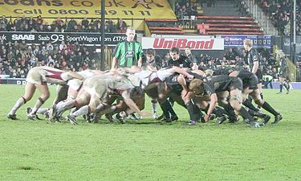Une mêlée fermée ou ordonnée3, généralement appelée simplement mêlée, est une manière de
remettre le ballon en jeu de manière sûre et équitable lorsqu'une faute involontaire, comme
un en-avant, a été commise.
Une mêlée est formée des huit avants de chaque équipe s'agrippant ensemble en trois rangées
appelées « pack ». La première rangée est composée des deux piliers (généralement les deux
plus gros hommes sur le terrain) et du talonneur, qui talonne le ballon vers l'arrière de
son pack. Elle assure le contact et le lien avec le pack adverse. La deuxième rangée,
composée des deux deuxième ligne et des deux troisièmes lignes ailes, assure la puissance du
pack. La troisième rangée, composée exclusivement du troisième ligne centre , sert à
orienter la poussée et à faciliter la libération de la balle par le demi de mêlée ou par
eux-mêmes lors d'un départ au ras.
Les deux paquets d'avants se lient en encastrant la tête des premières lignes entre celles de leurs adversaires. L'épaule droite de chaque joueur de première ligne doit toucher celle de son vis-à-vis. Ainsi, le pilier gauche a le côté gauche de la tête libre, tandis que le talonneur et le pilier droit ont la tête prise des deux côtés. Le demi de mêlée de l'équipe qui bénéficie de « l'introduction », c'est-à-dire à qui profite la faute, se place sur le côté gauche de la mêlée, entre son pilier gauche et le pilier droit de l'équipe adverse. Il « introduit » le ballon entre les deux packs et chaque talonneur essaie de récupérer le ballon en le talonnant avec le pied afin de le renvoyer vers l'arrière. Chaque pack pousse vers l'avant afin de récupérer plus facilement le ballon. Lorsque le ballon est arrivé à l'arrière de la mêlée, le demi de mêlée, parfois le numéro 8, s'empare du ballon et le transmet au demi d'ouverture qui lance l'attaque ou peut la garder pour lui-même. Une mêlée ne peut pas être jouée à moins de cinq mètres des lignes de but et de touche, afin d'éviter les essais trop faciles et de faciliter la circulation du ballon des deux côtés de la mêlée. Depuis 2007, l'arbitre donne quatre commandements au lieu de trois auparavant pour l'engagement. L'ancien commandement « Flexion ! Liez ! Entrez ! » (en anglais « Crouch! Hold! Engage! ») a été remplacé par « Flexion ! Touchez ! Stop ! Entrez ! » (« Crouch! Touch! Pause! Engage! »). La nouvelle règle de 2007 indique également que les piliers doivent avoir la tête et les épaules au-dessus des hanches au moment de l'engagement, afin d'éviter des effondrements de mêlée lors de l'engagement dangereux pour la santé des joueurs4. La nouvelle règle de 2012 réduit les commandements au nombre de trois «Flexion ! Touchez ! Jeu ! » (« Crouch! Touch! Set! »); la mise en place de ces nouveaux commandements occasionnant beaucoup de fautes de mêlées au début de la saison 2012-13. Au cours de l'année 2013 de nouveaux commandements seront appliqués désormais « Flexion, Lier, Jeu » (« Crouch! Bind! Set! »). L’IRB demande aussi d’arbitrer l’introduction de la balle en mêlée. Pour arbitrer l’introduction, il faut que ce qui précède soit correctement effectué. Si les nouveaux commandements sont trop compliqués à gérer, l’introduction en mêlée ne sera pas correctement arbitrée. Il n’y aura pas d’introduction tant que la mêlée ne sera pas stabilisée. L’arbitre donnera au demi de mêlée l’ordre d’introduire. Son commandement sera « oui, 9 ». Ce sera quasiment le quatrième commandement"5. Le commandement "Oui 9" a été remplacé en janvier 2014 par l'IRB par un simple signe de l'arbitre au demi de mêlée, car le commandement verbal donnait un trop grand avantage aux adversaires, le pack adverse pouvant porter l'effort au moment précis de l'introduction, mettant une forte pression sur le talonneur de l'équipe en possession de l'introduction, d'autant que celui-ci doit lever son pied pour talonner le ballon, réduisant encore la puissance du pack en possession du ballon à cet instant-là.
Touche et alignement
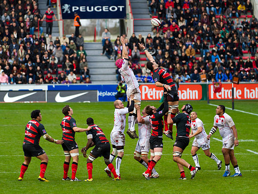La balle est « en touche » lorsqu'elle est sortie de l'aire de jeu sur un côté. Au rugby, il
est courant de tenter un coup de pied tactique en touche : soit en attaque pour s'approcher
de l'en-but adverse, soit en défense pour se dégager en s'en éloignant. En conséquence, la
touche est devenue une phase de jeu très importante qui s'est codifiée au fil de l'histoire
du rugby à XV.
Lorsque la balle sort ainsi, le jeu cesse brièvement et une remise en touche est effectuée à
l'endroit où le ballon a franchi la ligne de touche. Le lancer est en faveur de l'équipe
adverse à celle qui a en dernier frappé, joué ou touché le ballon, sauf si la balle est
sortie suite à un coup de pied de pénalité. Dans ce cas, la remise en jeu est en faveur de
son équipe.
Dans la plupart des cas, l'arbitre ordonne un « alignement » de joueurs : les avants de
chaque équipe forment une double rangée perpendiculaire à la ligne de touche, avec un «
couloir » d'un mètre entre eux. Le ballon est lancé dans l'axe du couloir depuis la ligne de
touche par un joueur de l'équipe faisant la remise en jeu, le talonneur ordinairement.
Une fois le lancer effectué, les deux équipes se disputent la balle : des joueurs alignés
sautent pour tenter de capter le ballon ou le dévier, vers le demi de mêlée ordinairement.
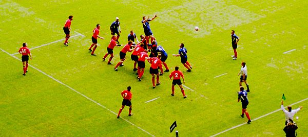
L'avantage pour une équipe de disposer du lancer est de savoir (grâce à un code) où et
comment sera lancé le ballon par le talonneur. Cela permet de prévoir non seulement une
méthode pour gagner la balle, mais aussi un lancement de jeu tactique qui y fait suite, en
attaque ou défense. Les défenseurs peuvent choisir de ne pas tenter de capter la balle, mais
se tenir prêts à attaquer le porteur dès qu'il la reçoit (et retouche le sol).
Il est également possible pour l'équipe bénéficiant de la touche de faire une remise en jeu
rapide à la main, à condition de l'effectuer comme pour une passe, c'est-à-dire sans
en-avant. Cela peut permettre une attaque vive et efficace mais le cas est rare, car des
joueurs adverses courent vers le lieu de touche pour qu'une remise en jeu rapide soit
périlleuse ou au moins non avantageuse.
Hors-jeu lors des remises en jeu
Tout joueur ne participant pas à la mêlée, c'est-à-dire les arrières et le demi d'ouverture,
doit rester en-jeu ou sera sanctionné par une pénalité. La ligne de hors-jeu est fixée par
le pied le plus en arrière du troisième ligne centre. Pour le demi de mêlée, la ligne de
hors-jeu dans la mêlée est fixée par le ballon.
Dans une touche, il existe deux lignes de hors-jeu situées à dix mètres de chaque côté de
l'axe de l'alignement. Lorsque la touche est finie celles ci disparaissent
Pour un coup de pied de renvoi, de pénalité ou franc, les joueurs de l'équipe du botteur
doivent se tenir derrière lui et ceux de l'équipe adverse à dix mètres.